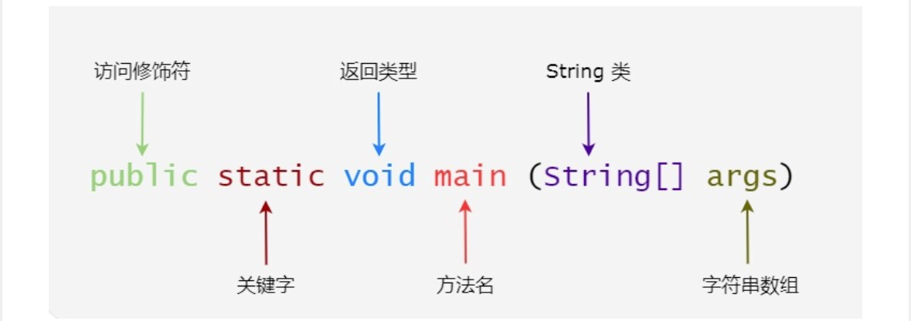

Java基础
September 25, 2024 | StudyJava 的入口方法
Java 的入口方法是 main 方法。main 方法是所有 Java 程序的入口方法。 当你运行一个 Java 程序时，JVM（Java 虚拟机）会寻找这个方法作为程序的起始点。main 方法的定义如下：
public static void main(String[] args) {
// 代码块
}类（Class）
包（Package）下有Class文件（.java文件），类是与之同名的，对外公开的（Public）的模版或蓝图。
类的属性
类的属性是字段（Field），也就是类中定义的变量，用来表示该类的对象所具有的特征或状态。
public class Car {
// 类的属性（字段）
public String brand; // 品牌
public String color; // 颜色
public int speed; // 速度
} 字段（Field）
字段就是类的属性。字段声明指的是在类中定义这些变量的过程。字段声明的基本语法如下：
[访问修饰符] [数据类型] [字段名] [= 初始值];
public int age;
private String name = "John";在上面的例子中，age 和 name 是两个字段。
类的成员
类的成员是类的组成部分，主要包括成员变量和成员方法两大类
其中成员变量=类的属性＝字段
静态成员
1.类的成员（非静态成员）
属于对象：类的成员变量和方法属于类的每个对象。当创建一个类的对象时，每个对象都有自己独立的成员变量副本。
对象级别：类的成员在每个对象中独立存在。也就是说，不同对象可以拥有不同的成员变量值。
通过对象访问：必须通过对象来访问非静态成员，不能通过类直接访问。
public class Car {
public String brand; // 类的成员变量
public int speed; // 类的成员变量
public void accelerate() { // 类的成员方法
speed += 10;
}
}2.静态成员
属于类：静态成员变量和方法属于类本身，而不是类的具体对象。所有对象共享同一个静态成员。
类级别：静态成员在类加载时初始化，并且在整个程序运行期间存在，它们不会因为对象的创建或销毁而发生变化。
通过类访问：静态成员可以通过类名直接访问，而无需创建对象。当然，也可以通过对象访问，但这不是最佳实践。
public class Car {
public static int numberOfCars = 0; // 静态变量
public Car() {
numberOfCars++; // 每创建一个新对象，静态变量自增
}
public static void displayCarCount() { // 静态方法
System.out.println("Total cars: " + numberOfCars);
}
}在这个例子中，numberOfCars 是一个静态变量，用来统计所有 Car 对象的数量，而 displayCarCount() 是一个静态方法，可以显示汽车总数。
Car car1 = new Car();
Car car2 = new Car();
Car.displayCarCount(); // 通过类名访问静态方法，输出：Total cars: 2对象（Object）
对象是类的实例
// 创建两个 Car 对象
Car car1 = new Car("Toyota");
// 对象1的属性
Car car2 = new Car("Honda");
// 对象2的属性声明对象
声明对象的过程包括两步
1. 声明对象的引用：声明一个变量，用来保存对象的引用（类似于指向对象的指针）。
2. 创建对象：使用 new 关键字调用类的构造方法，分配内存并初始化对象。
Car myCar;
// 1. 声明对象的引用，myCar 是 Car 类的一个引用
myCar = new Car();
//2. 创建对象，使用 new 关键字分配内存并初始化对象可以将上面的两步简化为一步：
Car myCar = new Car();
// 声明并创建对象在这里:
Car是类名
myCar是对象名
new Car()是创建 Car 类的新对象，并调用其构造方法。
类与对象的关系
如果没有类，对象不会存在。类是对象的模版和蓝图，对象必须基于一个具体的类。类是抽象的概念，而对象是类的具体实例。
类的成员和对象的关系
类的成员（属性和方法）在类内定义，而实例化对象是没有限制的。
实例1.在其他类中创建对象（常见做法）
public class Main {
public static void main(String[] args) {
Car car1 = new Car(); // 在 Main 类中创建 Car 类的对象
car1.brand = "Toyota";
car1.accelerate();
}
}实例2.在同一类中创建对象
public class Car {
public String brand;
public int speed;
// 构造方法
public Car createAnotherCar() {
return new Car(); // 在 Car 类的成员方法中创建对象
}
}